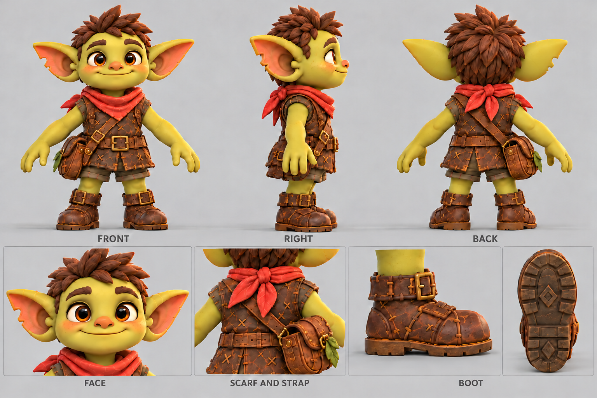
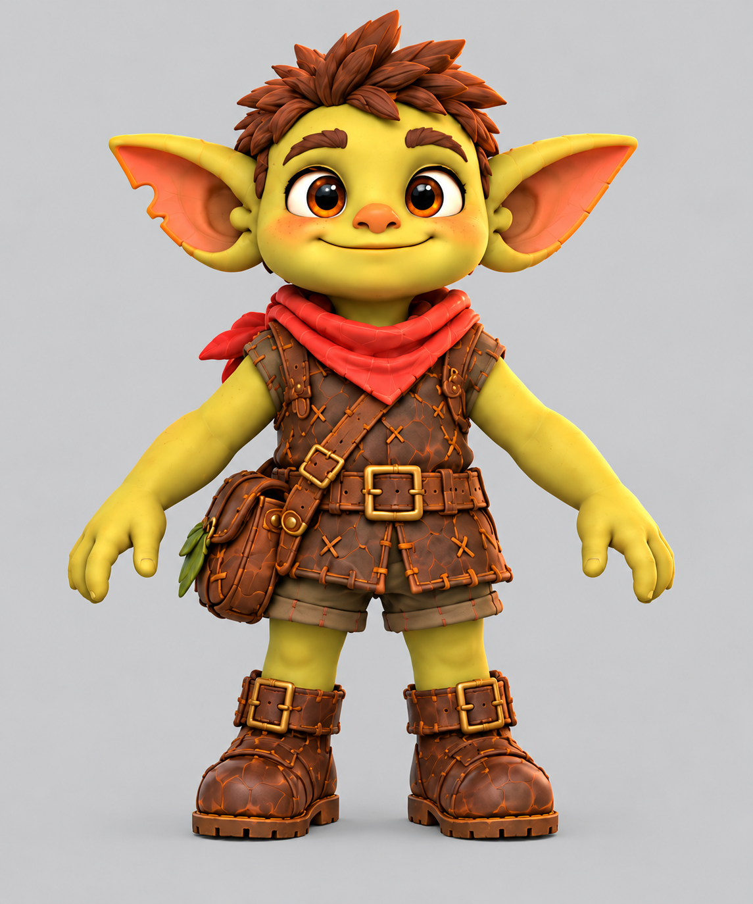

GLIMBLEHOP · TISH v01 · 18 ОКТЯБРЯ 2026
Первый Тиш для 3D
Фронт для Tripo → проверка формы в Blender → rig и анимация → кандидат в Unity.
Лист ракурсов и деталей

Отдельный фронт для первой генерации
В обычное поле image-to-3D загружать этот файл: одна фигура, без подписей и соседних ракурсов.

Критерий первого кандидата
Узнаваемое лицо со всех сторон, раздельные конечности, правильная сторона укуса и сумки, чистые материалы, удобная для анимации геометрия. После rig — устойчивые стопы, естественный прыжок и приземление на настоящую игровую плиту.
Новая 3D-модель Тиша ещё не сгенерирована. Полученная через Blender Bridge модель наездника сохранена отдельно.